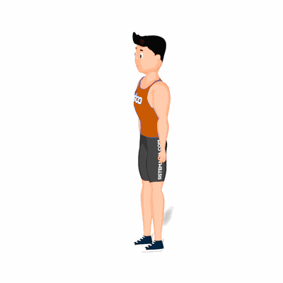

Alongamento de Bíceps

Exercício de alongamento para o bíceps e também flexores do punho, preparando para a atividade física.
Ficha Técnica
Tipo: Musculação
Grupo Muscular: Bíceps
Aparelho: Nenhum
Músculos: Nenhum
Como realizar
- Fique em pé;
- Estenda um dos braços para frente até que este esteja paralelo ao solo, sendo que a palma da mão deve estar voltada para cima;
- Com a outra mão, segure pelos dedos e faça o movimento para baixo, sem abaixar o braço estendido.
 RC STORE
RC STORE